Radiation & Environmental Assurance
Radiation effects, reliability, extreme temperature, and environmental stress testing for parts headed beyond low Earth orbit.

UCF · Space U — NASA-Aligned MSI Research Center
CRESST: Center for Reliability Evaluation of Semiconductor and Space Technologies
CRESST is UCF's center for space electronics assurance — developing and validating the components, advanced packaging, circuits, subsystems, instruments, and test methods needed to operate in the extreme environments of space.
The Gap
NASA's reliance on commercial electronics has outpaced the infrastructure built to qualify them.
NASA and the broader aerospace community increasingly depend on commercial-off-the-shelf (COTS) microelectronics — but the assurance infrastructure, test methods, and trained workforce needed to qualify them for long-duration exploration haven't kept pace. NASA centers like GSFC and JPL have historically absorbed this work, but workforce transitions and rising mission demand have opened a capacity gap.
CRESST-MSTAR closes it — a NASA-aligned, MSI-led hub at UCF that connects COTS part selection, radiation and reliability testing, advanced packaging, and failure analysis into one qualification pipeline, built to replenish expertise and relieve test-infrastructure bottlenecks on a scale no other program can match.
Key Areas of Focus
Every part CRESST touches moves through the same set of assurance disciplines — from first electrical stress test to a NASA-style data package.
Radiation effects, reliability, extreme temperature, and environmental stress testing for parts headed beyond low Earth orbit.
High-voltage, biased-stress, power-electronics, and application-relevant electrical testing.
Package-level reliability, materials, thermal/mechanical performance, and advanced integration strategies.
Root-cause analysis, a failure-signature library, and closed-loop assurance improvement.
Part selection, screening, derating, alternate sourcing, and NASA-style data packages.
Curriculum, certificate pathways, internships, mentorship, and continuous workforce replenishment.
How CRESST Builds Talent
Our goal is to replenish skills through stewarded workforce programs and build bottleneck-relieving infrastructure on a timetable, scale, and relevance no other program can match.
NASA Alignment
Who We Work With
CRESST's assurance workflows are shaped directly by the organizations that will use them.

EEEE parts assurance and radiation-effects mentoring.
Extreme-environment assessment and advanced-packaging review.
Mission-relevant testing and Artemis systems engagement.
System-level reliability and extreme-environment assessment.

Prime-contractor perspective and workforce mentoring.

Commercial-space radiation-effects and qualification perspective.

NSF-funded advanced-packaging and heterogeneous-integration partnership.
Why UCF
UCF's national rank as an aerospace & defense workforce supplier, by scale
UCF students — one of the nation's largest engineering pipelines
Years of NASA electrical/power leadership Dr. Iannello brings to CRESST
Peer-reviewed radiation-effects papers from Dr. Zhang's lab, cited 5,000+ times
Leadership

Principal Investigator · Assistant Professor, UCF
Leads CRESST's technical program in radiation effects and reliability of advanced microelectronic devices — silicon, compound semiconductors, and 2D materials — plus photonic and RF devices and MEMS/NEMS. Author of 200+ peer-reviewed papers cited more than 5,000 times; recipient of the 2022 IEEE NPSS Women in Engineering leadership travel award.

Center Director · Professor of Practice, UCF
Brings 35 years of technical leadership across NASA, industry, and academia in spacecraft and launch-vehicle electrical and power systems. Formerly NASA's longest-tenured Technical Fellow for Electrical/Power. Leads CRESST's workforce and curriculum strategy and its NASA engagement.

Department Chair, UCF Electrical & Computer Engineering
Provides university-wide institutional backing for CRESST. His own research spans MEMS/NEMS, resonant sensors, and micro-fabrication, with applications in telecommunications, bioengineering, and sensor technology.
Get In Touch
For partnership, funding, or facility inquiries, reach the CRESST coordination office at UCF.